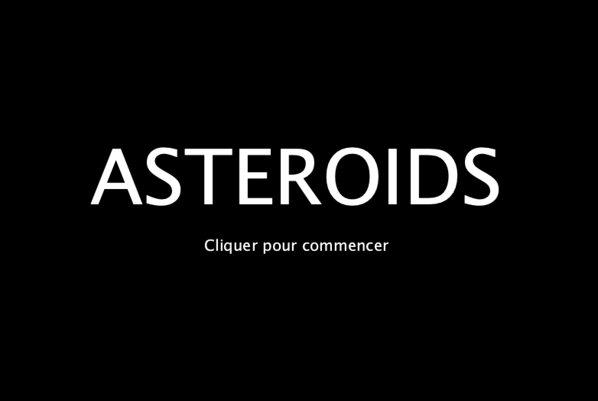
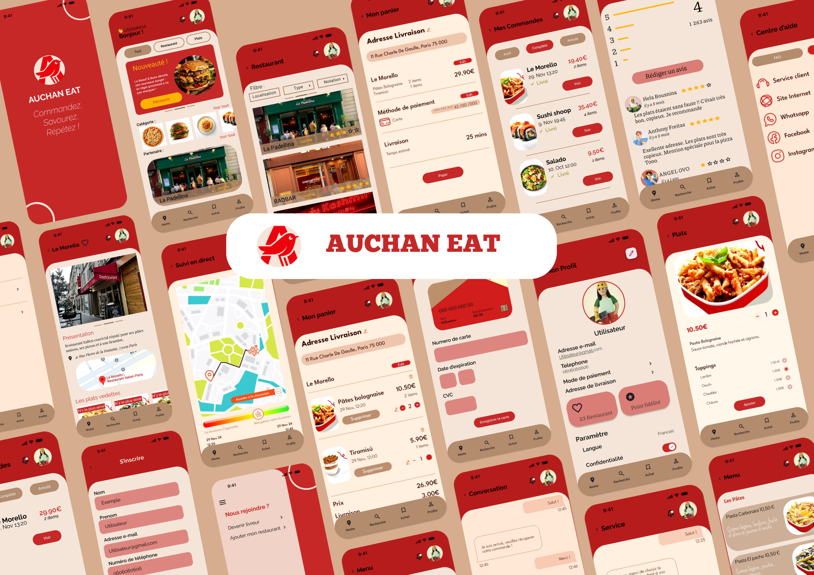
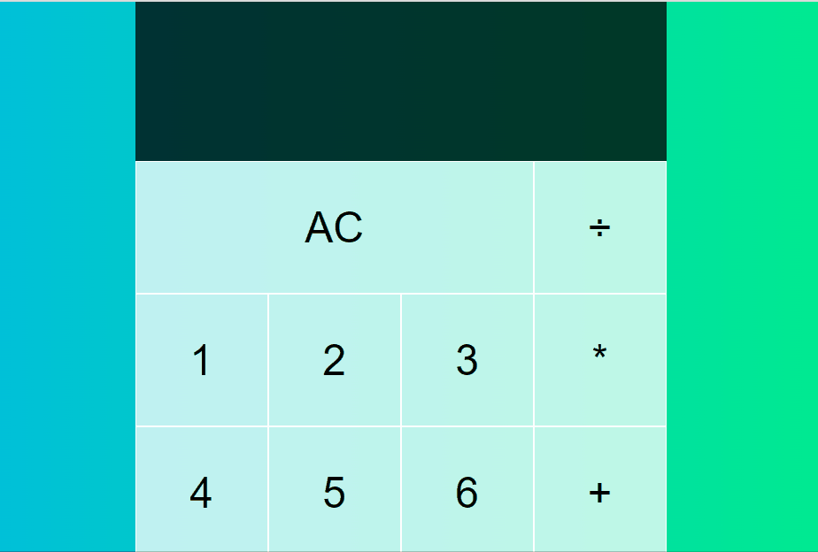
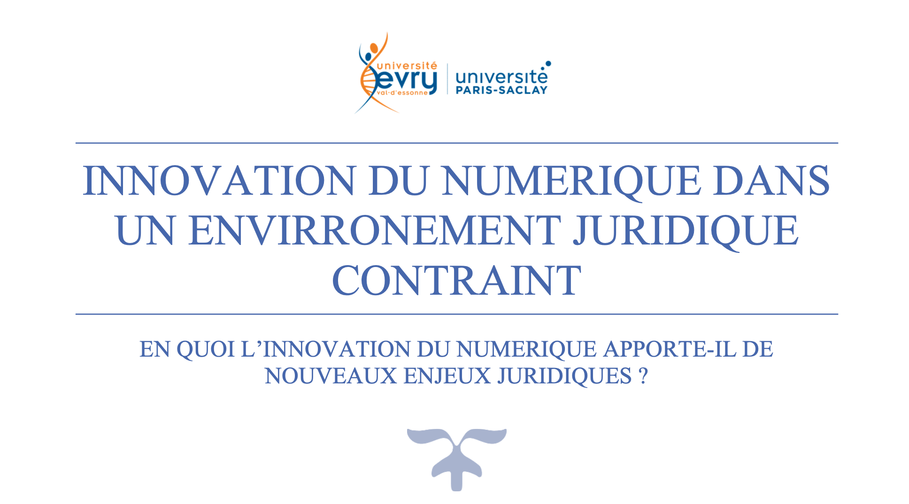
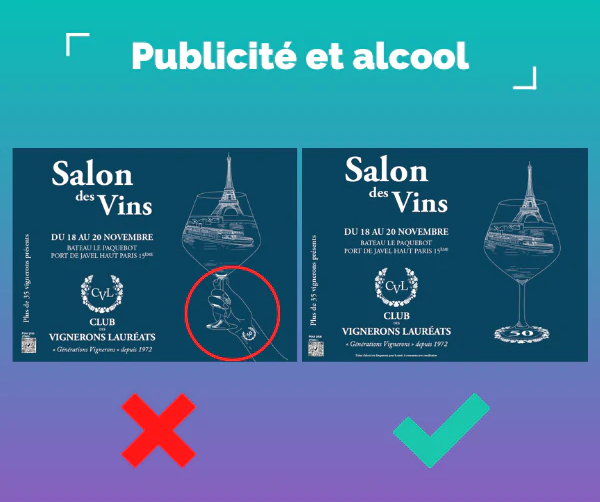
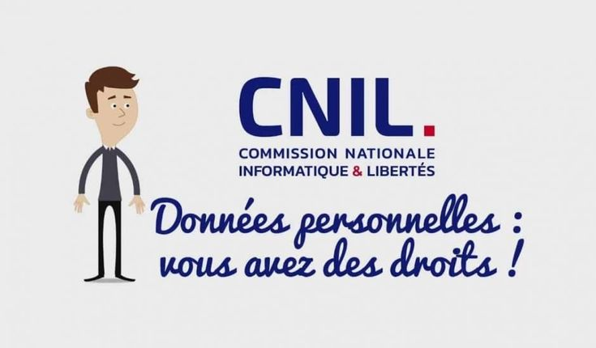

Portfolio
Découvrez mes projets et réalisations.
Voir mes projets

HTML
CSS
JavaScript
Java
C
OCAML
Python
SQL
Processing







Si mon profil vous a plu, je serais ravie de pouvoir en parler de vive voix avec vous, n'hésitez pas à me contacter !
boughrara.soumaiya@gmail.com ⎜Cliquez ici pour envoyer un Email